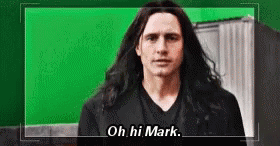
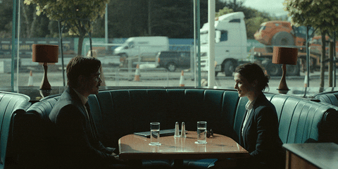

Lady Bird
In Lady Bird, Greta Gerwig reveals herself to be a bold new cinematic voice with her directorial debut, excavating both the humor and pathos in the turbulent bond between a mother and her teenage daughter.

Disaster Artist
The Disaster Artist is a hilarious and welcome reminder that there is more than one way to become a legend—and no limit to what you can achieve when you have absolutely no idea what you're doing.

The Lobster
David has just been dumped by his wife and lives in a society where single people have 45 days to find true love, or else they are turned into the animal of their choice and released into the woods.